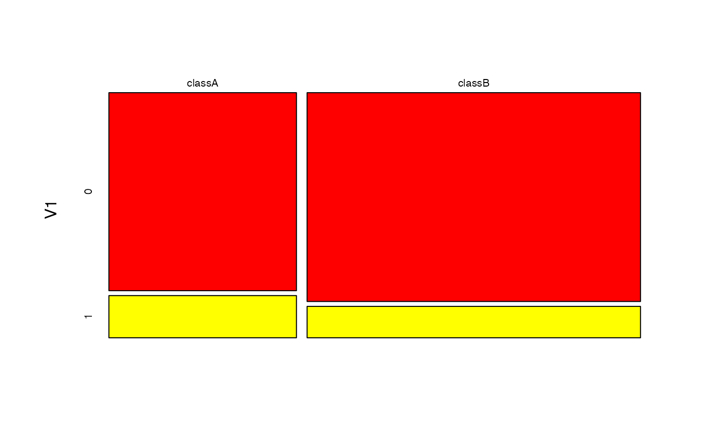
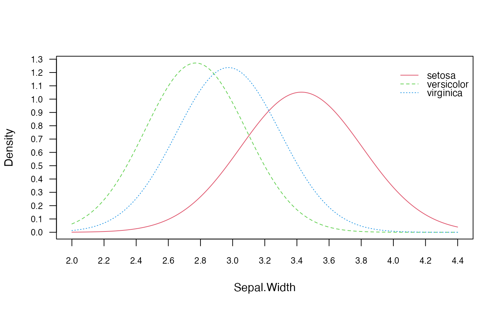

The naivebayes package provides a range of functions that implement specialised versions of the Naïve Bayes and in this short vignette their basic usage is demonstrated.
Bernoulli Naive Bayes
Train the Bernoulli Naive Bayes model
##
## =========================== Bernoulli Naive Bayes ============================
##
## - Call: bernoulli_naive_bayes(x = M, y = y, laplace = laplace)
## - Laplace: 0.5
## - Classes: 2
## - Samples: 100
## - Features: 10
## - Prior probabilities:
## - classA: 0.31
## - classB: 0.69
##
## ------------------------------------------------------------------------------## classA classB
## [1,] 0.2461275 0.7538725
## [2,] 0.4746591 0.5253409
## [3,] 0.3120177 0.6879823
## [4,] 0.5728985 0.4271015
## [5,] 0.4167054 0.5832946
## [6,] 0.2343251 0.7656749## classA classB
## [1,] 0.2461275 0.7538725
## [2,] 0.4746591 0.5253409
## [3,] 0.3120177 0.6879823
## [4,] 0.5728985 0.4271015
## [5,] 0.4167054 0.5832946
## [6,] 0.2343251 0.7656749
## classA:0 classA:1 classB:0 classB:1
## V1 0.703125 0.296875 0.7928571 0.2071429
## V2 0.921875 0.078125 0.8357143 0.1642857
## V3 0.859375 0.140625 0.7785714 0.2214286
## V4 0.703125 0.296875 0.7785714 0.2214286
## V5 0.765625 0.234375 0.7214286 0.2785714
## V6 0.828125 0.171875 0.8214286 0.1785714
## V7 0.796875 0.203125 0.8500000 0.1500000
## V8 0.671875 0.328125 0.7928571 0.2071429
## V9 0.796875 0.203125 0.8071429 0.1928571
## V10 0.671875 0.328125 0.8071429 0.1928571Equivalent calculation with naive_bayes function
# It is made sure that the columns are factors with the 0-1 levels)
df <- as.data.frame(lapply(as.data.frame(M), factor, levels = c(0,1)))
# sapply(df, class)
nb <- naive_bayes(df, y, laplace = laplace)
head(nb %prob% df)## classA classB
## [1,] 0.2461275 0.7538725
## [2,] 0.4746591 0.5253409
## [3,] 0.3120177 0.6879823
## [4,] 0.5728985 0.4271015
## [5,] 0.4167054 0.5832946
## [6,] 0.2343251 0.7656749
Multinomial Naive Bayes
Train the Multinomial Naive Bayes
##
## ========================== Multinomial Naive Bayes ===========================
##
## - Call: multinomial_naive_bayes(x = M, y = y, laplace = laplace)
## - Laplace: 1
## - Classes: 2
## - Samples: 100
## - Features: 10
## - Prior probabilities:
## - classA: 0.28
## - classB: 0.72
##
## ------------------------------------------------------------------------------## [1] classB classB classB classB classB classB
## Levels: classA classB## classA classB
## [1,] 0.4018209 0.5981791
## [2,] 0.1790100 0.8209900
## [3,] 0.1872064 0.8127936
## [4,] 0.3407883 0.6592117
## [5,] 0.2009097 0.7990903
## [6,] 0.2751583 0.7248417## classA classB
## V1 0.08731241 0.10673516
## V2 0.09004093 0.08732877
## V3 0.09549795 0.10502283
## V4 0.08867667 0.09075342
## V5 0.10641201 0.10502283
## V6 0.11596180 0.10102740
## V7 0.10095498 0.08618721
## V8 0.09959072 0.10045662
## V9 0.12005457 0.11415525
## V10 0.09549795 0.10331050Poisson Naive Bayes
Train the Poisson Naive Bayes
##
## ============================ Poisson Naive Bayes =============================
##
## - Call: poisson_naive_bayes(x = M, y = y, laplace = laplace)
## - Laplace: 0
## - Classes: 2
## - Samples: 100
## - Features: 10
## - Prior probabilities:
## - classA: 0.51
## - classB: 0.49
##
## ------------------------------------------------------------------------------## classA classB
## [1,] 0.2780217 0.7219783
## [2,] 0.4714603 0.5285397
## [3,] 0.4728605 0.5271395
## [4,] 0.6977415 0.3022585
## [5,] 0.5631658 0.4368342
## [6,] 0.7435009 0.2564991
## classA classB
## V1 2.803922 3.183673
## V2 3.254902 3.448980
## V3 3.137255 2.857143
## V4 2.980392 2.857143
## V5 2.901961 3.285714
## V6 2.764706 3.591837
## V7 3.058824 3.102041
## V8 3.098039 2.673469
## V9 2.901961 2.612245
## V10 3.078431 3.142857
Gaussian Naive Bayes
Train the Gaussian Naive Bayes
##
## =========================== Gaussian Naive Bayes ============================
##
## - Call: gaussian_naive_bayes(x = M, y = y)
## - Samples: 150
## - Features: 4
## - Prior probabilities:
## - setosa: 0.3333
## - versicolor: 0.3333
## - virginica: 0.3333
##
## -----------------------------------------------------------------------------
## setosa:mu setosa:sd versicolor:mu versicolor:sd virginica:mu
## Sepal.Length 5.006 0.3524897 5.936 0.5161711 6.588
## Sepal.Width 3.428 0.3790644 2.770 0.3137983 2.974
## Petal.Length 1.462 0.1736640 4.260 0.4699110 5.552
## Petal.Width 0.246 0.1053856 1.326 0.1977527 2.026
## virginica:sd
## Sepal.Length 0.6358796
## Sepal.Width 0.3224966
## Petal.Length 0.5518947
## Petal.Width 0.2746501## setosa:mu versicolor:mu virginica:mu
## Sepal.Length 5.006 5.936 6.588
## Sepal.Width 3.428 2.770 2.974
## Petal.Length 1.462 4.260 5.552
## Petal.Width 0.246 1.326 2.026Equivalent calculation with general naive_bayes function.
##
## ================================ Naive Bayes =================================
##
## - Call: naive_bayes.default(x = M, y = y)
## - Laplace: 0
## - Classes: 3
## - Samples: 150
## - Features: 4
## - Conditional distributions:
## - Gaussian: 4
## - Prior probabilities:
## - setosa: 0.3333
## - versicolor: 0.3333
## - virginica: 0.3333
##
## ------------------------------------------------------------------------------